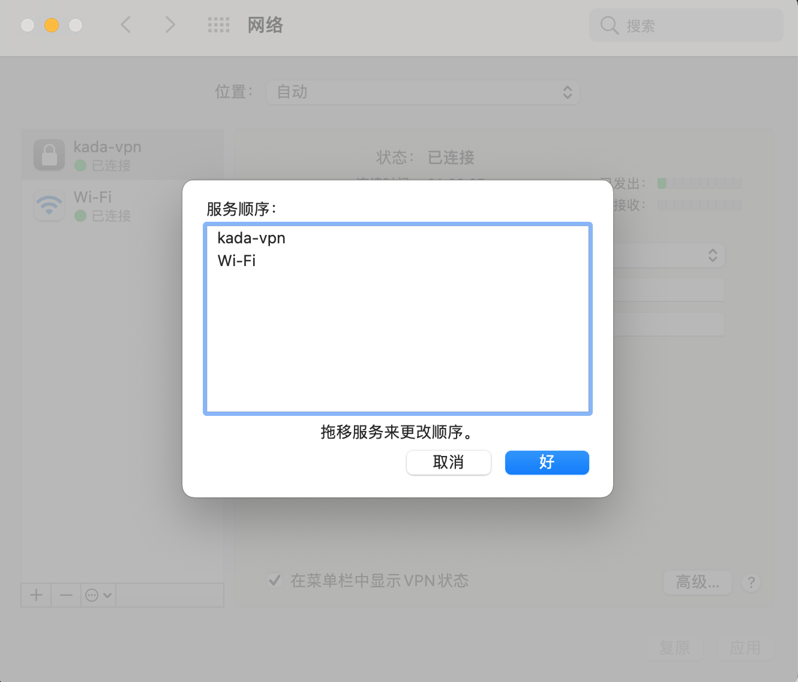

摘要
本文主要记录Mac使用及开发过程中遇到的一些常见问题及解决方案
问题
Mac VPN链接上了，但是还是无法访问内网的问题
如果VPN的账号密码设置什么的都没问题的话，那就需要注意一个东西，那就是Mac的网络是存在服务顺序一说的，调整VPN服务顺序在wifi之上即可，这样VPN就可以使用了。

终端执行git命令中文乱码
没安装oh-my-zsh，直接执行`git config —global core.quotepath false ``；
安装过oh-my-zsh，运行上面的命令后，再修改
.zshrc，将以下内容添加到该文件末尾：export LC_ALL=en_US.UTF-8
export LANG=en_US.UTF-8
Mac 关闭开机启动项
系统偏好设置->用户群组->登录项即可看到对应的开机启动项，取消勾选不需要启动的应用即可
Mac Terminal代理设置相关
Terminal设置代理
1
export https_proxy=http://127.0.0.1:7890 http_proxy=http://127.0.0.1:7890 all_proxy=socks5://127.0.0.1:7890
Terminal 取消代理
1
unset http_proxy| unset https_proxy